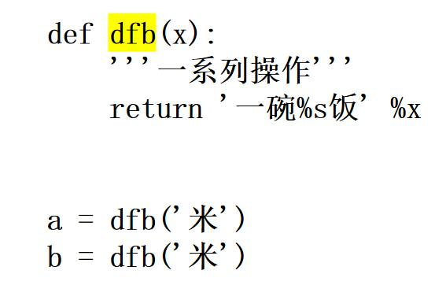

第 1 页 · 5.2.2 形参与实参
5.2.2 形参与实参
函数定义时括弧内为形参，一个函数可以没有形参，但是括弧必须要有，表示该函数不接受参数。
函数调用时，将实参的引用传递给形参。
在定义函数时，对参数个数并没有限制，如果有多个形参，需要使用逗号进行分隔。
形参：形式上的参数。实参：实际的参数。

第 2 页 · 5.2.2 形参与实参
5.2.2 形参与实参
对于绝大多数情况下，在函数内部直接修改形参的值不会影响实参，而是创建一个新变量。例如：
>>> def addOne(a):
print(id(a), ':', a)
a += 1
print(id(a), ':', a)
>>> v = 3
>>> id(v)
1599055008
>>> addOne(v)
1599055008 : 3
1599055040 : 4
>>> v
3
>>> id(v)
1599055008
注意：此时a的地址与v的地址相同
现在a的地址和v的地址不一样了
第 3 页 · 5.2.2 形参与实参
5.2.2 形参与实参
但是在有些情况下，可以通过特殊的方式在函数内部修改实参的值。
>>> def modify(v): # 使用下标修改列表元素值
v[0] = v[0]+1
>>> a = [2]
>>> modify(a)
>>> a
[3]
>>> def modify(v, item): # 使用列表的方法为列表增加元素
v.append(item)
>>> a = [2]
>>> modify(a, 3)
>>> a
[2, 3]
第 4 页 · 5.2.2 形参与实参
5.2.2 形参与实参
也就是说，如果传递给函数的实参是可变序列，并且在函数内部使用下标或可变序列自身的原地操作方法增加、删除元素或修改元素时，实参也会得到相应的修改。
>>> def modify(d): #修改字典元素值或为字典增加元素
d['age'] = 38
>>> a = {'name':'Dong', 'age':37, 'sex':'Male'}
>>> a
{'name':'Dong', 'age':37, 'sex':'Male'}
>>> modify(a)
>>> a
{'name':'Dong', 'age':38, 'sex':'Male'}
第 5 页 · 5.2.3 参数类型
5.2.3 参数类型
在Python中，函数参数有很多种：可以为位置参数、默认参数、关键参数、可变长度参数等等。
Python在定义函数时不需要指定形参的类型，完全由调用者传递的实参类型以及Python解释器的理解和推断来决定。
Python中也不需要指定函数的返回值类型，函数的返回值类型由return语句返回值的类型来决定，如果函数中没有return语句或者没有执行到return语句而返回或者执行了不带任何值的return语句，则函数都默认为返回空值None。
没有任何说明的参数为位置参数，实参按顺序依次传递给形参，要求实参和形参的数量和顺序都一致。
第 6 页 · 位置参数（positional arguments）是比较常用的形式，调用函数时实参和形参的顺序必须严格一致，并且实参和
位置参数（positional arguments）是比较常用的形式，调用函数时实参和形参的顺序必须严格一致，并且实参和形参的数量必须相同。
>>> def demo(a, b, c):
print(a, b, c)
>>> demo(3, 4, 5) #按位置传递参数
3 4 5
>>> demo(3, 5, 4)
3 5 4
>>> demo(1, 2, 3, 4) #实参与形参数量不同导致报错
TypeError: demo() takes 3 positional arguments but 4 were given
5.2.3.1 位置参数
第 7 页 · 5.2.3.2 默认值参数
5.2.3.2 默认值参数
Python支持默认值参数，即在定义函数时为形参设置默认值。在调用带有默认值参数的函数时，可以不对带有默认值的参数进行传值，也可以为其赋值，具有很大的灵活性。
>>> def say(message, times=1):
print(message*times)
>>> say('hello')
hello
>>> say('hello', 3)
hello hello hello
>>> say('hi', 7)
hi hi hi hi hi hi hi
第 8 页 · 5.2.3.2 默认值参数
5.2.3.2 默认值参数
注意：默认值参数必须出现在函数参数列表的最右端，任何一个默认值参数右边不能有非默认值参数。
>>> def func(a=3, b, c=5): # 失败，带默认值的参数后面有不带默认值的参数
print(a, b, c)
SyntaxError: non-default argument follows default argument
>>> def func(a=3, b): # 失败，带默认值的参数后面有不带默认值的参数
print(a, b)
SyntaxError: non-default argument follows default argument
>>> def func(a, b, c=5): # 成功
print(a, b, c)
第 9 页 · 5.2.3.2 默认值参数
5.2.3.2 默认值参数
另外，默认值参数如果使用不当，会导致很难发现的逻辑错误，例如：
def demo(newitem, old_list=[]):
old_list.append(newitem)
return old_list
print(demo('5', [1,2,3,4]))
print(demo('aaa', ['a','b']))
print(demo('a'))
print(demo('b'))
试着想一想，这段代码会输出什么呢？
第 10 页 · 5.2.3.2 默认值参数
5.2.3.2 默认值参数
上面的代码输出结果如下，最后一个结果是错的。
[1, 2, 3, 4, '5']
['a', 'b', 'aaa']
['a']
['a', 'b']
继续想：为什么会这样呢？
第 11 页 · 5.2.3.2 默认值参数
5.2.3.2 默认值参数
原因在于默认值参数的赋值只会在函数定义时被解释一次。当使用可变序列作为参数默认值时，一定要谨慎操作。
最后一个问题来了：正确的代码该怎么写呢？
第 12 页 · 5.2.3.2 默认值参数
5.2.3.2 默认值参数
终极解决方案：改成下面的样子就不会有问题了
def demo(newitem, old_list=None):
if old_list is None:
old_list = []
new_list = old_list[:]
new_list.append(newitem)
return new_list
print(demo('5', [1,2,3,4]))
print(demo('aaa', ['a','b']))
print(demo('a'))
print(demo('b'))
第 13 页 · 5.2.3.3 关键参数
5.2.3.3 关键参数
关键参数主要是指调用函数时的参数传递方式，与函数定义无关。通过关键参数可以按参数名字传递值，实参顺序可以和形参顺序不一致，但不影响传递结果，避免了用户需要牢记位置参数顺序的麻烦。
>>> def demo(a, b, c=5):
print(a, b, c)
>>> demo(3, 7)
3 7 5
>>> demo(a=7, b=3, c=6)
7 3 6
>>> demo(c=8, a=9, b=0)
9 0 8
第 14 页 · 5.2.3.4 可变长度参数
5.2.3.4 可变长度参数
可变长度参数主要有两种形式：在参数名前加1个星号*或2个星号**。
*parameter用来接收多个位置实参并将其放在元组中。
**parameter用来接收多个关键参数并存放到字典中。
第 15 页 · 5.2.3.4 可变长度参数
5.2.3.4 可变长度参数
*parameter的用法：
>>> def demo(*p):
print(p)
>>> demo(1, 2, 3)
(1, 2, 3)
>>> demo(1, 2)
(1, 2)
>>> demo(1, 2, 3, 4, 5, 6, 7)
(1, 2, 3, 4, 5, 6, 7)
第 16 页 · 5.2.3.4 可变长度参数
5.2.3.4 可变长度参数
**parameter的用法：几种不同类型的参数可以混合使用，但是不建议这样做。
>>> def func_4(a, b, c=4, *aa, **bb):
print(a, b, c)
print(aa)
print(bb)
>>> func_4(1, 2, 3, 4, 5, 6, 7, 8, 9, xx='1', yy='2', zz=3)
1 2 3
(4, 5, 6, 7, 8, 9)
{'xx': '1', 'yy': '2', 'zz': 3}
>>> func_4(1, 2, 3, 4, 5, 6, 7, xx='1', yy='2', zz=3)
1 2 3
(4, 5, 6, 7)
{'xx': '1', 'yy': '2', 'zz': 3}
第 17 页 · 5.2.3.5 参数传递的序列解包
5.2.3.5 参数传递的序列解包
传递参数时，可以通过在实参序列前加一个星号将其解包，然后传递给多个单变量形参。
>>> def demo(a, b, c):
print(a+b+c)
>>> seq = [1, 2, 3]
>>> demo(*seq)
6
>>> tup = (1, 2, 3)
>>> demo(*tup)
6
第 18 页 · 如果函数实参是字典，可以在前面加两个星号进行解包，等价于关键参数。
如果函数实参是字典，可以在前面加两个星号进行解包，等价于关键参数。
>>> def demo(a, b, c):
print(a+b+c)
>>> dic = {'a':1, 'b':2, 'c':3}
>>> demo(**dic)
6
>>> demo(a=1, b=2, c=3)
6
>>> demo(*dic.values())
6
5.2.3.5 参数传递的序列解包
第 19 页 · 5.2.3.5 参数传递的序列解包
5.2.3.5 参数传递的序列解包
注意：
调用函数时对实参序列使用一个星号*进行解包后的实参将会被当做普通位置参数对待，会在使用两个星号**进行序列解包的参数之后的实参当作关键参数对待。
第 20 页 · 5.2.3.5 参数传递的序列解包
5.2.3.5 参数传递的序列解包
>>> def demo(a, b, c): #定义函数
print(a, b, c)
>>> demo(*(1, 2, 3)) #调用，序列解包
1 2 3
>>> demo(1, *(2, 3)) #位置参数和序列解包同时使用
1 2 3
>>> demo(1, *(2,), 3)
1 2 3
第 21 页 · 讨论题
讨论题
什么是实参？什么是形参？实参和形参的作用？（超星）